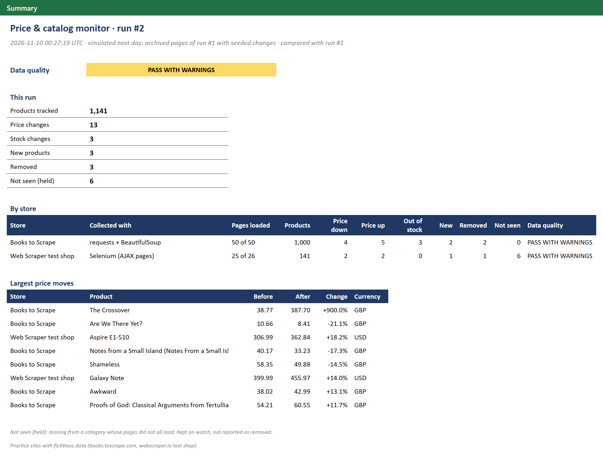
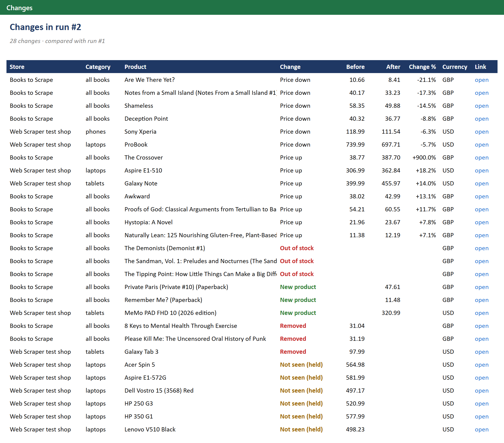
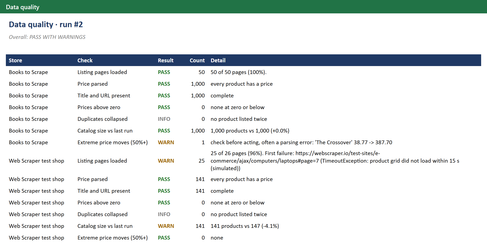

Price and catalog monitor: two web stores, one recurring pipeline that reports what changed
Demo on scraping practice sites. Both sources are sandboxes built for people to practise web scraping, with fictitious products: Books to Scrape and the Web Scraper e-commerce test shop. They never change, so the second run of the demo is simulated (how).

The problem
A retailer wants to know every morning what changed in the catalogs it watches: which prices moved, what went out of stock, what is new and what was delisted. It usually starts with a one-off script that scrapes once and writes a CSV. Run it every day and the problems show up:
- running it twice appends the same products again;
- a listing page that times out silently drops 20 products, which the next comparison reports as "discontinued";
- a price parsed wrong (a misplaced decimal) goes straight into a repricing decision;
- pages built with JavaScript come back empty, because the products load after the HTML arrives;
- nobody can say whether today's file is complete.
The solution
One command per run, from the first request to the report:
python -m pricewatch.run
flowchart TB
A[Store A: static pages] -->|requests + BeautifulSoup| C[Records + page log]
B[Store B: AJAX pages] -->|Selenium, headless Chrome| C
C --> H[(Raw HTML archive, per run)]
C --> D[(SQLite history: no duplicates)]
D --> E{Changes vs last known state}
D --> Q{Data quality checks}
E --> R[Excel report + CSV]
Q --> R
- Collect politely. The crawler reads
robots.txtfirst: the Web Scraper site disallows some of its test paths, so the crawler never requests them. It sends a generic user agent, pauses 1 second between requests and retries timeouts,429and5xxwith a growing wait. A404is not retried. - Use the right tool for each page. The bookstore serves plain HTML, so
requestsand BeautifulSoup are enough. The crawler reads the page count on page 1 and plans every page up front, so a failed page costs 20 products, not the rest of the crawl. The electronics shop paginates with AJAX: the URL never changes, so a plain HTTP request only ever sees page 1. Selenium clicks through the pager the way a visitor would and waits for the product grid to be replaced each time. It does not touch the site's cookie banner: consent is not accepted on anyone's behalf. - Keep the evidence. Every listing page is logged as loaded or failed, with the error. The raw HTML
is archived per run (gzipped), so a parser fix can be replayed on past runs without asking the site
again (
--replay). Every record keeps the page it came from. - Store without duplicates. SQLite with primary keys (one row per product, one observation per product per run) and upserts. Processing the same run twice leaves the database exactly as processing it once. A product listed twice in one run is kept once and counted.
- Detect what changed against the last known state of each product: price down or up (prices are stored in integer cents, so floating-point noise never looks like a change), out of stock or back in stock, new, listed again, removed. A missing product counts as removed only when every listing page of its category loaded. If a page failed, it is held as not seen and reported as such. After 3 misses in a row it counts as removed anyway.
- Check quality before anyone acts: pages loaded, prices parsed, titles and URLs present, prices above zero, duplicates, catalog size against the last run, and price moves of 50% or more, which are more often a parsing error than a real price.
- Report. An Excel workbook (summary, changes, catalog, data quality, run history) for people, and CSV
files (
changes,catalog,quality) for the next tool, such as a Looker Studio dashboard or a repricing script.
The result
| Before: one-off script | After: this pipeline (measured on the demo) | |
|---|---|---|
| Collection | one script per site, run by hand | 1,147 products from 76 pages in 82 seconds, both stores, with a 1-second pause between requests |
| Running it again | duplicates appended | same database; every run kept in the history |
| Page that fails to load | 20 products silently missing, "discontinued" tomorrow | logged with its error; its 6 products held as not seen, 0 false removals |
| JavaScript pages | empty, or page 1 only | every AJAX page, through Selenium |
| Price changes | two CSV files compared by hand | before, after and % for every product |
| Misplaced decimal | goes into the decision | flagged for review before anyone acts |
| "Is today's file complete?" | nobody knows | "76 of 76 pages loaded", with PASS / WARN / FAIL per store |
| Seeded changes in the simulated run | n/a | 28 of 28 detected, and nothing else |
| Changes | Data quality |
|---|---|
 |
 |
Sample output: Price_Monitor_Report.xlsx ·
changes.csv · catalog.csv
How the demo works
python -m pricewatch.demo
- Run 1 is a real crawl of both practice stores. It is the baseline: on a first run every product is "new", which says nothing, so no changes are reported.
- Run 2 is a simulated next day. The practice sites never change, so the demo replays the archived
pages of run 1 and seeds changes into them: 13 price moves (one of them a misplaced decimal), 3 stock-outs, 3 delisted products, 3 new arrivals and one laptop listing page that times out, hiding 6 products. The seeded list lives in
simulate.py, and a test checks that the detector finds every seeded change and nothing else.
To run it on a schedule, point cron (or Windows Task Scheduler) at the single-run command:
0 7 * * * cd /path/to/repo && python -m pricewatch.run
Design choices
- Collection rules come first. Public pages only, no logins, no CAPTCHA bypass, no personal data,
and never a site whose terms forbid collection.
robots.txtand a pause between requests are the default, not an option. - The lightest tool that works. If a site has a JSON endpoint behind its pages, reading it is faster and gentler than a browser. Selenium is for pages that only exist after JavaScript runs.
- Completeness is data. The page log is what lets the report say "the catalog is complete" or "these 6 products could not be checked today". Without it, a timeout and a delisting look the same.
- One file, no server. SQLite keeps the whole history in one file. For a client, the same tables can live in Postgres or BigQuery without changing the logic.
- Adding a store is a configuration entry plus a parser function, tested on saved HTML.
Code: fetch.py · collect.py ·
parse.py · store.py ·
changes.py · quality.py ·
report.py